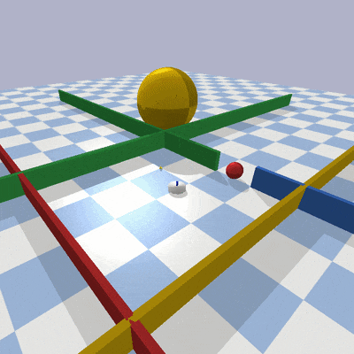

Generic URDF robots
In this package, generic urdf robots and a panda gym environment are available. The goal is to make this environment as easy as possible to deploy. Although, we used the OpenAI-Gym framing, these environments are not necessarly restricted to Reinforcement-Learning but rather to local motion planning in general.
|
 |
|
|
|
|


Installation
This package depends on casadi for dynamics generation and gym. Dependencies should be installed through pip or poetry, see below.
Using pip, you can use
pip3 install '.[options]'
Using poetry
poetry install -E <options>
Options are keyboard and scenes.
Switching
Environments can be created using the normal gym syntax. For example the below code line creates a toy robot with 3 links. Actions are velocities to the individual joints.
env = gym.make('nLink-urdf-reacher-vel-v0', n=3, dt=0.01, render=True)
A holonomic and a differential drive mobile manipulator are implemented:
env = gym.make('albert-reacher-vel-v0', dt=0.01, render=True)
env = gym.make('mobile-reacher-tor-v0', dt=0.01, render=True)
For most robots, different control interfaces are available, velocity control, acceleration control and torque control.
Adding sensors to the robot
A robot can be given a lidar or obstacle sensor by creating a sensor object and passing it to the environment:
sensor = ObstacleSensor()
env.add_sensor(sensor)
The observations from the sensor are returned by the env.step(action) call.
The structure of the observation varies depending on the sensor and its arguments
for more info see the Sensor class and subclasses located at urdfenvs/sensors/
Robot control with the keyboard
Control robot actuators with keyboard keys. This is done by:
Setting up a parent en child process with a pipe connection inbetween
Setup and start main process with parent_connection as arguement
Setup Responder object with child_connection as arguement
Start Responder with parent process as arguement
In the main loop an request for action should be made followed by waiting for a response as such:
parent_conn.send({"request_action": True})
keyboard_data = parent_conn.recv()
action = keyboard_data["action"]
Additionally custom key bindings and a default action can and passed as arguement to the responder. An example can be found in urdfenvs/examples/keyboard_input.py.
Examples
Examples can be found in the urdfenvs/examples folder.